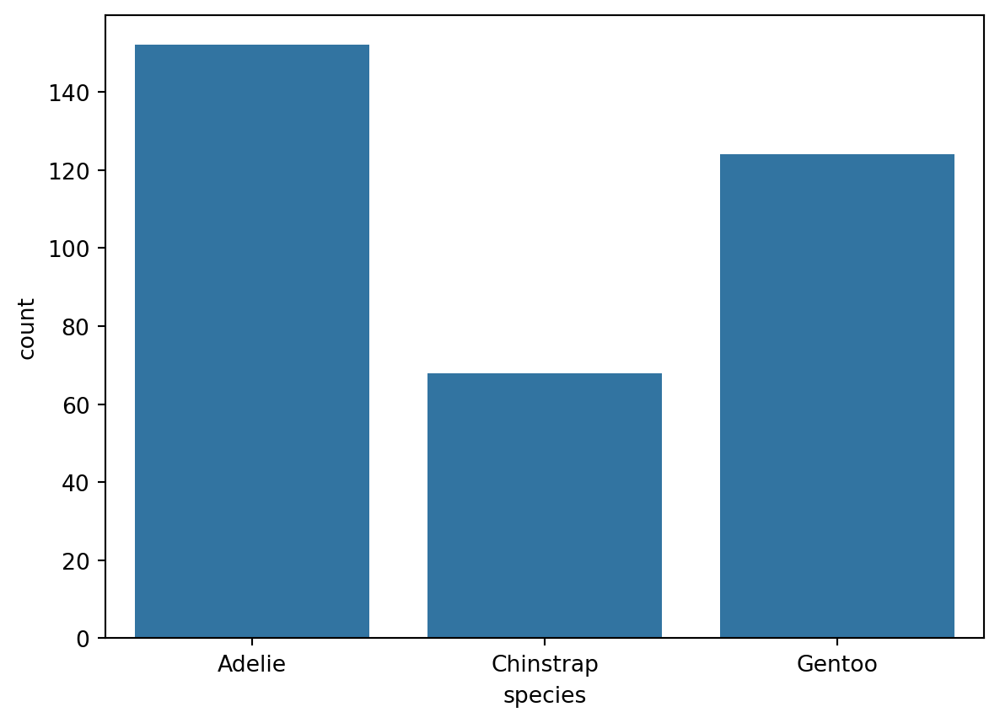
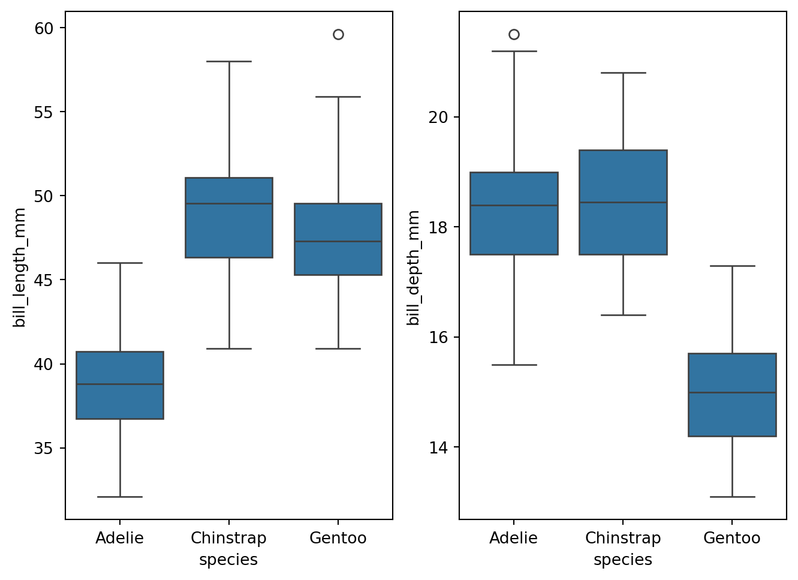
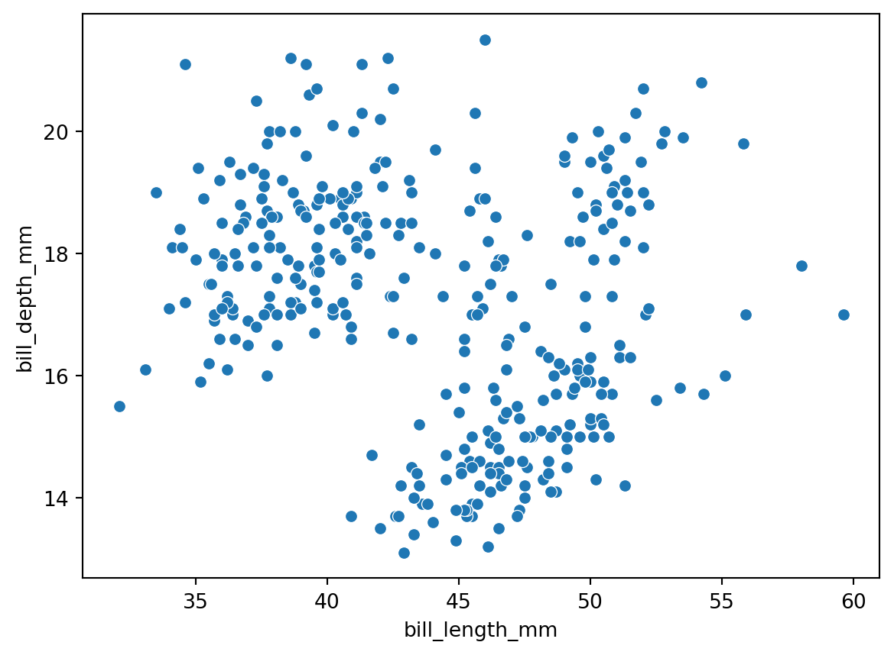
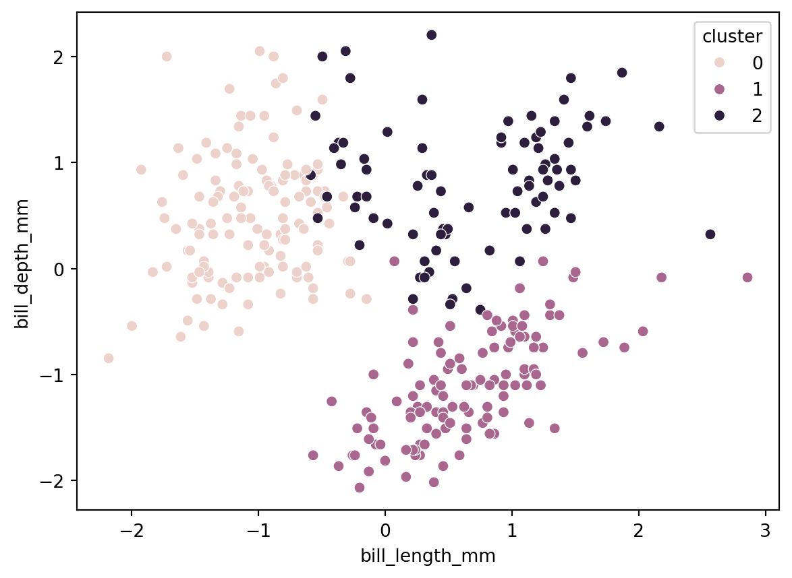
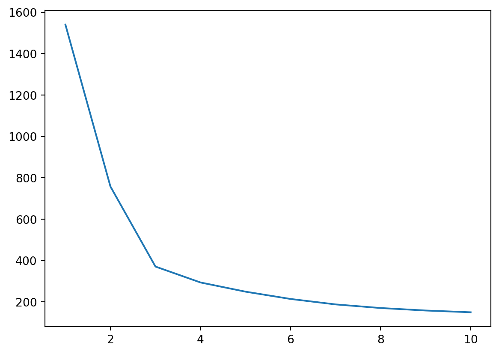
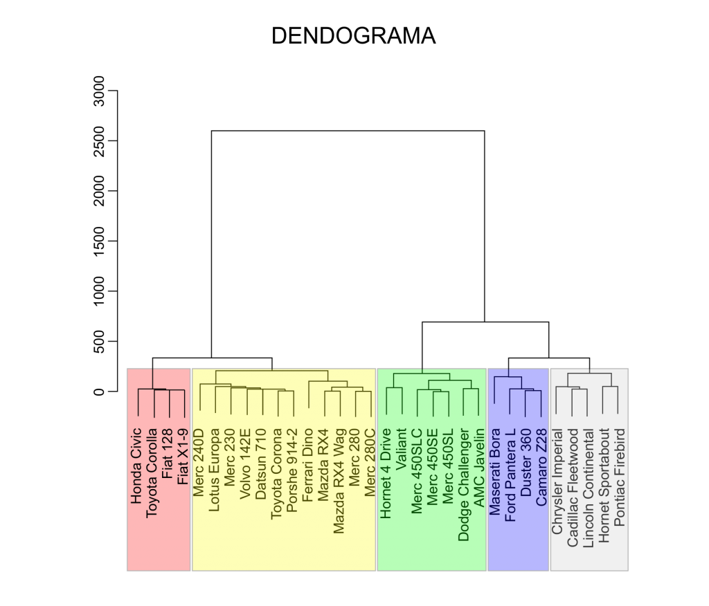
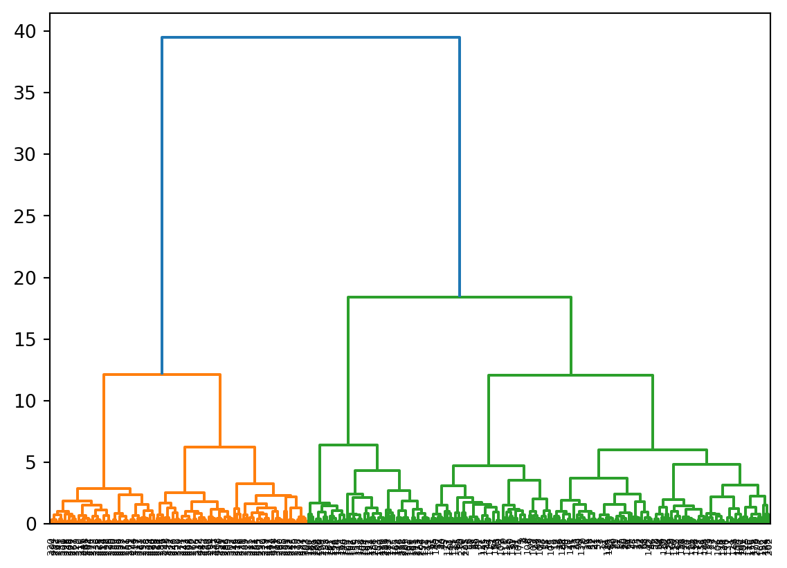
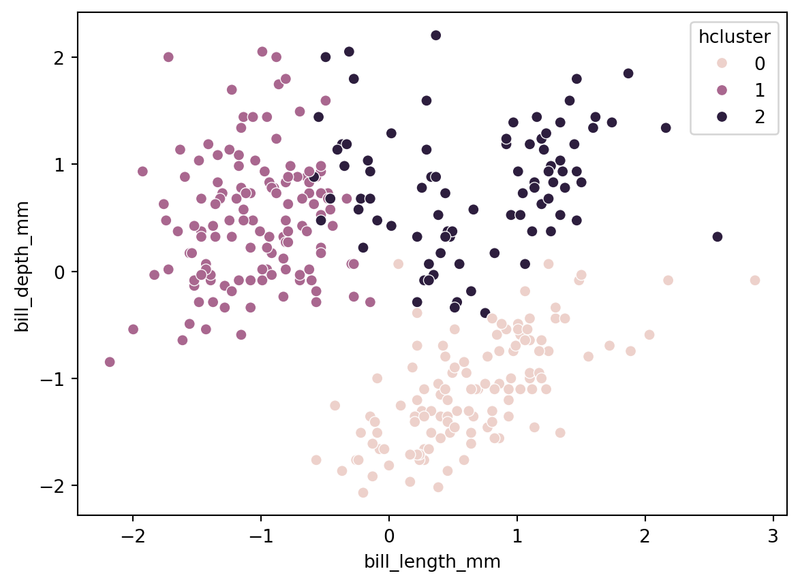

import pandas as pd
import numpy as np
import matplotlib.pyplot as plt
import seaborn as sns
from sklearn.cluster import KMeans, DBSCAN
from sklearn.preprocessing import StandardScalerTutorial 6 - Métodos não supervisionados
Carregando os pacotes
Lendo os dados
Você pode baixar os dados aqui.
Neste tutorial vamos aprender 2 métodos de machine learning que servem para problemas de agrupamento. Neste tipo de problemas, não temos uma variável de saída conhecida, portanto não podemos usar os métodos supervisionados já conhecidos.
penguins = pd.read_csv('pydata5/penguins.csv')
penguins.head()| species | island | bill_length_mm | bill_depth_mm | flipper_length_mm | body_mass_g | sex | |
|---|---|---|---|---|---|---|---|
| 0 | Adelie | Torgersen | 39.1 | 18.7 | 181.0 | 3750.0 | MALE |
| 1 | Adelie | Torgersen | 39.5 | 17.4 | 186.0 | 3800.0 | FEMALE |
| 2 | Adelie | Torgersen | 40.3 | 18.0 | 195.0 | 3250.0 | FEMALE |
| 3 | Adelie | Torgersen | NaN | NaN | NaN | NaN | NaN |
| 4 | Adelie | Torgersen | 36.7 | 19.3 | 193.0 | 3450.0 | FEMALE |
colunas:
penguins.info()
penguins.isna().sum()<class 'pandas.core.frame.DataFrame'>
RangeIndex: 344 entries, 0 to 343
Data columns (total 7 columns):
# Column Non-Null Count Dtype
--- ------ -------------- -----
0 species 344 non-null object
1 island 344 non-null object
2 bill_length_mm 342 non-null float64
3 bill_depth_mm 342 non-null float64
4 flipper_length_mm 342 non-null float64
5 body_mass_g 342 non-null float64
6 sex 333 non-null object
dtypes: float64(4), object(3)
memory usage: 18.9+ KBspecies 0
island 0
bill_length_mm 2
bill_depth_mm 2
flipper_length_mm 2
body_mass_g 2
sex 11
dtype: int64quantidades:
sns.countplot(x = "species", data = penguins)
plt.show()
boxplots:
fig,axs = plt.subplots(ncols = 2)
fig.tight_layout()
sns.boxplot(y= 'bill_length_mm', x = 'species', data = penguins, ax= axs[0])
sns.boxplot(y= 'bill_depth_mm', x = 'species', data = penguins, ax= axs[1])
K-means
Vamos aprender inicialmente o método conhecido como ‘k-means’ que basicamente agrupa as observações por uma métrica de similaridade e distância e logo cria os grupos a partir da aproximação entre elas, ou seja, aquelas observações com distância pequena entre elas farão parte do mesmo grupo.

Vamos plotar os dados:
sns.scatterplot(x='bill_length_mm', y='bill_depth_mm', data = penguins)
Agora podemos começar o tratamento dos dados.
df = penguins.dropna(inplace=True)
df = penguins.drop(columns=['species', 'island', 'sex'])
df.info()<class 'pandas.core.frame.DataFrame'>
Index: 333 entries, 0 to 343
Data columns (total 4 columns):
# Column Non-Null Count Dtype
--- ------ -------------- -----
0 bill_length_mm 333 non-null float64
1 bill_depth_mm 333 non-null float64
2 flipper_length_mm 333 non-null float64
3 body_mass_g 333 non-null float64
dtypes: float64(4)
memory usage: 13.0 KBUtilizando o algoritmo de padronização:
scaler = StandardScaler()
scaled_data = scaler.fit_transform(df)Reconvertendo o dataset scaled_data para dataframe para facilitar o manuseio.
df = pd.DataFrame(scaled_data, columns=df.columns)
df.head()| bill_length_mm | bill_depth_mm | flipper_length_mm | body_mass_g | |
|---|---|---|---|---|
| 0 | -0.896042 | 0.780732 | -1.426752 | -0.568475 |
| 1 | -0.822788 | 0.119584 | -1.069474 | -0.506286 |
| 2 | -0.676280 | 0.424729 | -0.426373 | -1.190361 |
| 3 | -1.335566 | 1.085877 | -0.569284 | -0.941606 |
| 4 | -0.859415 | 1.747026 | -0.783651 | -0.692852 |
df.info()<class 'pandas.core.frame.DataFrame'>
RangeIndex: 333 entries, 0 to 332
Data columns (total 4 columns):
# Column Non-Null Count Dtype
--- ------ -------------- -----
0 bill_length_mm 333 non-null float64
1 bill_depth_mm 333 non-null float64
2 flipper_length_mm 333 non-null float64
3 body_mass_g 333 non-null float64
dtypes: float64(4)
memory usage: 10.5 KBRodando o algoritmo k-means:
kmeans = KMeans(n_clusters=3, random_state=42, n_init=10)kmeans.fit(df)KMeans(n_clusters=3, n_init=10, random_state=42)In a Jupyter environment, please rerun this cell to show the HTML representation or trust the notebook.
On GitHub, the HTML representation is unable to render, please try loading this page with nbviewer.org.
KMeans(n_clusters=3, n_init=10, random_state=42)
incluindo a coluna cluster:
df['cluster'] = kmeans.labels_
df.head()
df.tail()| bill_length_mm | bill_depth_mm | flipper_length_mm | body_mass_g | cluster | |
|---|---|---|---|---|---|
| 328 | 0.587352 | -1.762145 | 0.931283 | 0.892957 | 1 |
| 329 | 0.514098 | -1.457000 | 1.002739 | 0.799674 | 1 |
| 330 | 1.173384 | -0.744994 | 1.502928 | 1.919069 | 1 |
| 331 | 0.221082 | -1.202712 | 0.788372 | 1.234995 | 1 |
| 332 | 1.081817 | -0.541564 | 0.859828 | 1.483749 | 1 |
sns.scatterplot(x='bill_length_mm', y='bill_depth_mm', hue = 'cluster', data = df)
Escolhendo o número ideal de clusters
inertia = []
for i in range(1, 11):
kmeans = KMeans(n_clusters=i, random_state=i, n_init=10)
kmeans.fit(df)
inertia.append(kmeans.inertia_)Criar um dataframe com todos os valores de k :
inertia_df = pd.DataFrame({'k': range(1, 11), 'inertia': inertia})
inertia_df.head()| k | inertia | |
|---|---|---|
| 0 | 1 | 1540.186186 |
| 1 | 2 | 757.624293 |
| 2 | 3 | 370.766144 |
| 3 | 4 | 293.904751 |
| 4 | 5 | 249.413429 |
Escolhe-se o ponto onde o ‘cotovelo’ é mais visível, neste caso, 3 clusters:
plt.plot(inertia_df['k'], inertia_df['inertia'])
plt.show()
Cluster Hierárquico
A diferença com o método anterior é que para o cluster hierárquico não é necessário pré-definir o número de clusters, pois o método agrupa as observações de forma sequencial, facilitando a identificação do número ideal de cluster.

O ideal é que os dados estejam normalizados, pelo menos as colunas numéricas, pois este método aceita também colunas (atributos) categóricos.
from scipy.cluster.hierarchy import linkage, dendrogramaplicando o algoritmo:
h_clustering = linkage(scaled_data, method="ward", metric="euclidean")graficando o dendograma:
dendrogram(h_clustering)
plt.show()
salvando os resultados no dataframe:
from sklearn.cluster import AgglomerativeClustering
cluster = AgglomerativeClustering(n_clusters=3, metric='euclidean', linkage='ward')
df['hcluster'] = cluster.fit_predict(df)graficando os resultados:
sns.scatterplot(x='bill_length_mm', y='bill_depth_mm', hue = 'hcluster', data = df)